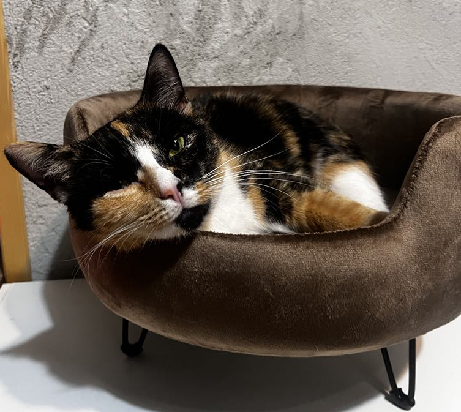

O Mnie
Cześć! Mam na imię Wiktoria i mam 23 lata. Od zawsze moim największym zamiłowaniem były koty – te urocze, niezależne i pełne tajemnic stworzenia. Pisząc tego bloga, chcę dzielić się z Wami moją pasją, wiedzą oraz doświadczeniem, które zdobyłam przez lata obcowania z moimi futrzastymi towarzyszami. Z każdego dnia spędzonego z kotami uczę się czegoś nowego – od ich niesamowitych zachowań po drobne triki, które potrafią zaskoczyć każdego miłośnika tych zwierząt.
Mój Blog to miejsce, gdzie znajdziesz wszystko, co związane z kotami: od porad dotyczących pielęgnacji i zdrowia, przez zabawki i akcesoria, aż po ciekawe historie z życia kotów. Wierzę, że każdy kot to indywidualność, a moim celem jest, byście dzięki temu blogowi lepiej poznali swoich pupili i mogli zapewnić im jak najlepsze życie.
